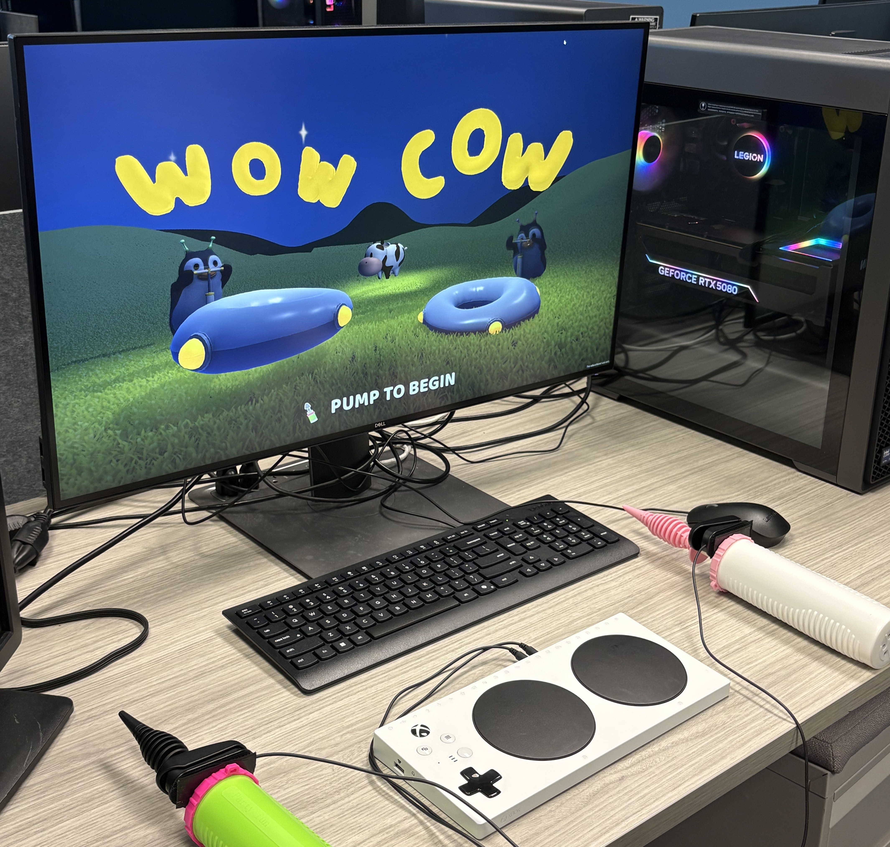
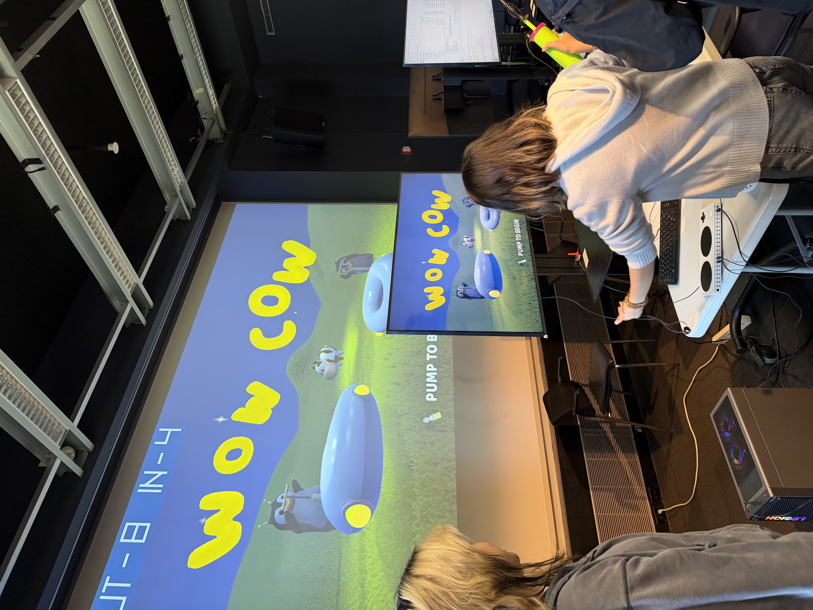

WOW COW
WOW COW is a two-player party game built around the Xbox Adaptive Controller and a modified physical air pump. Our goal was to make players feel like they were truly inflating balloons to repair a damaged spaceship, so the tangible interaction had to feel immediate, readable, and fun.

Repairing a spaceship with a real pump.
The game begins after two alien penguins crash their balloon spaceship while fighting over a cow. To keep the cow, both players have to repair the ship by pumping air into balloons as quickly and accurately as possible. Each player uses a real modified pump, turning the act of pumping into the core interaction and making the competition feel physical rather than abstract.
Design Goal
Make the player feel like they are actually doing the in-game action. The physical pump needed to support that illusion, so the controller design was central to the project rather than an add-on.
My Role
I worked on game programming and interaction design, helping build the game logic, round system, scoring behavior, and the pumping input detection that connected the physical prop to the digital gameplay.
Five rounds with changing targets.
The game is structured around five short competitive rounds. Players race to inflate their balloons, but each round changes the target or timing to create variation and tension.
Where the project became difficult.
1. Physical Interaction Design
We modified a real air pump and hid a clicker controller in the base so the player could interact with the game by performing an actual pumping motion. The challenge was to preserve the fantasy of pumping a balloon while still producing a reliable signal the game could read.
2. Pump Detection & Judging
The game needed to judge how much each player had pumped and convert that into accurate balloon growth, target comparison, and scoring. We had to make the pumping feel responsive while also keeping the competition fair and readable across different rounds.
Playtest image and video.
Below are placeholders for the playtest media you mentioned. Put the files in the same folder as this page using the names shown below and they will display automatically.
Playtest Image
